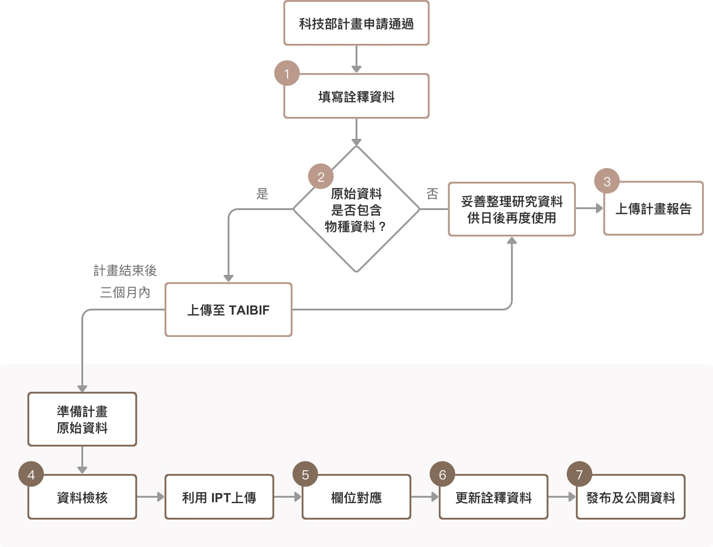

科技部資料繳交依據與時程
台灣是在地質活動頻繁的大陸島，於 200-300 萬年前形成於四塊板塊所組成的聚合板塊邊緣之上。在這篇台灣植物相的研究中，研究者運用了 GBIF 整合之東亞與南亞開花植物類群分布的點位資料，再區分特有種與非特有種後，推測出後者潛在的播遷來源。

資料管理流程 @TaiBIF，以上依科技部制定「生物多樣性及長期生態研究計畫之物種分布資料釋出作業規範」辦理
1. 填寫詮釋資料
科技部計畫申請通過後即應填寫詮釋資料 (e.g. 聯絡人、時間、地理範圍)，讓其他人更能掌握資料及內容。
2. 原始資料是否包含物種資料？
科技部計畫申請通過後即應填寫詮釋資料 (e.g. 聯絡人、時間、地理範圍)，讓其他人更能掌握資料及內容。
3. 上傳計畫報告
科技部計畫申請通過後即應填寫詮釋資料 (e.g. 聯絡人、時間、地理範圍)，讓其他人更能掌握資料及內容。
4. 資料檢核
科技部計畫申請通過後即應填寫詮釋資料 (e.g. 聯絡人、時間、地理範圍)，讓其他人更能掌握資料及內容。
5. 利用 IPT 上傳
科技部計畫申請通過後即應填寫詮釋資料 (e.g. 聯絡人、時間、地理範圍)，讓其他人更能掌握資料及內容。
6. 更新詮釋資料
科技部計畫申請通過後即應填寫詮釋資料 (e.g. 聯絡人、時間、地理範圍)，讓其他人更能掌握資料及內容。
7. 發布及公開資料
科技部計畫申請通過後即應填寫詮釋資料 (e.g. 聯絡人、時間、地理範圍)，讓其他人更能掌握資料及內容。